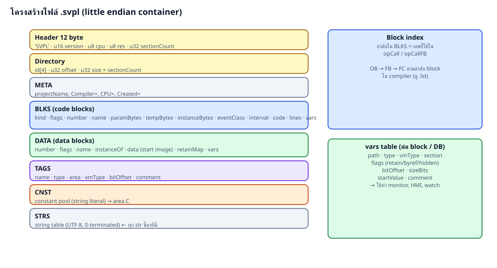
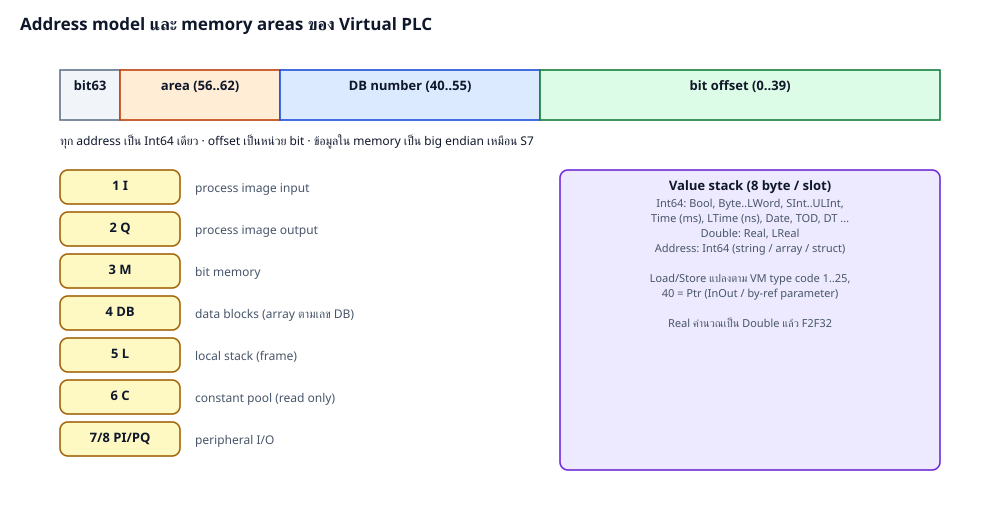

| offset | ขนาด | ฟิลด์ |
|---|---|---|
| 0 | 4 | magic = 'SVPL' |
| 4 | 2 | version = 1 |
| 6 | 1 | cpu: 0 S7-300, 1 S7-400, 2 S7-1200, 3 S7-1500 |
| 7 | 1 | reserved |
| 8 | 4 | section count |
| 12 | 12×n | directory: id[4], u32 offset, u32 size |
| id | เนื้อหา |
|---|---|
| META | str projectName, u32 n, str × n (Compiler=, CPU=, Created=) |
| BLKS | u32 count; ต่อ block: u8 kind(1 OB/2 FC/3 FB), u8 flags, u16 number, str name, str sourceFile, u32 paramBytes, u32 tempBytes, u32 instanceBytes, u16 eventClass, u16 res, u32 interval, bytes code, u32 nLines + (u32 ofs, u32 line)×n, vars |
| DATA | u32 count; ต่อ DB: u16 number, u8 flags(1 opt,2 retain,4 instance), u8 res, str name, str instanceOf, bytes data, bytes retainMap, vars |
| TAGS | u32 count; str name, str type, u8 area, u8 vmType, u16 res, i64 bitOffset, str comment |
| CNST | bytes constant pool (String literal รูปแบบ S7) |
| STRS | string table UTF-8 ปิดท้ายด้วย 0 — str = u32 offset ในตารางนี้ |
vars: u32 count; ต่อรายการ str path, str type, u8 vmType (0 = aggregate), u8 section, u8 flags (1 retain, 2 byref, 4 hidden, 8 array, 16 struct), u8 res, i64 bitOffset, i64 sizeBits, str startValue, str comment

| code | ชนิด | ในหน่วยความจำ | บน stack |
|---|---|---|---|
| 1 | Bool | 1 bit | 0/1 |
| 2–5 | Byte Word DWord LWord | 1/2/4/8 byte | unsigned |
| 6–9 | SInt Int DInt LInt | two complement | signed |
| 10–13 | USInt UInt UDInt ULInt | unsigned | |
| 14/15 | Real / LReal | IEEE-754 | Double |
| 16/17 | Time / LTime | DInt ms / LInt ns | Int64 |
| 18 | S5Time | BCD + time base | ms |
| 19–21 | Date TOD LTOD | UInt / UDInt / ULInt | วัน / ms / ns |
| 22 | DT | BCD 8 byte | ms นับจาก 1990 |
| 23 | LDT | LInt | ns นับจาก 1970 |
| 24/25 | Char / WChar | 1 / 2 byte | code |
| 40 | Ptr | 8 byte raw address | address |